Codevertex ERP runs your people operations in one place: staff records and contracts, leave, time and attendance from biometric terminals and phones, payroll with Kenyan statutory deductions, statutory returns, appraisals, training and recruitment. Staff use it from their phones. Managers approve and report from the web.
The ERP is part of the Codevertex platform. Your staff sign in once for every Codevertex app, payroll journals and payouts go to Codevertex Treasury, notices go out by email, SMS or WhatsApp, and project managers see labour cost and staff capacity in Projects. Nothing is exported and typed in again.
Employee profiles, CSV import, contracts generated as PDF, the org chart, staff numbers and exits.
Leave
Leave types, entitlements, daily accrual with carry-forward, requests from the phone and approvals.
Time and attendance
Shifts, rosters and rotations, lateness, absence and overtime rules, corrections by approval.
Devices and phones
ZKTeco SenseFace 4A terminals that push to the cloud, and geo-fenced clock-in from the phone.
Payroll
PAYE, NSSF, SHIF, Housing Levy and NITA from platform rates, payslips, approval and payout.
Payroll extras
Claims, advances, loans, casual workers, consultants with withholding tax and piece rates.
Statutory returns
P9, P10, NSSF, SHIF, Housing Levy and NITA returns built from processed payslips.
Talent
Appraisals, performance targets, training, and recruitment with a public careers page.
Self-service and reports
Staff clock in, apply for leave and download payslips. Reports for every department.
2. HR core
Every employee in one record
The employee record is the centre of the ERP. Leave, attendance, appraisals, training and payroll all hang off it, so a change made once shows everywhere.
Add or import staff
Add people in a two step form with KRA PIN and national ID checks, or import many at once from a CSV file, including NSSF and SHIF numbers. One bad row never stops the rest.
A full profile
Salary and tax reliefs, bank accounts, next of kin, education, past employers, disciplinary incidents and documents you can preview in the browser.
Contracts
Pick a contract type and the ERP fills in standard terms from the person's name, role and pay. Edit the wording, preview it with your logo and file the PDF on the profile.
Org chart and exits
Reporting lines drawn from each person's line manager, by organisation or by branch. Exits keep the full history of payslips, attendance and leave.
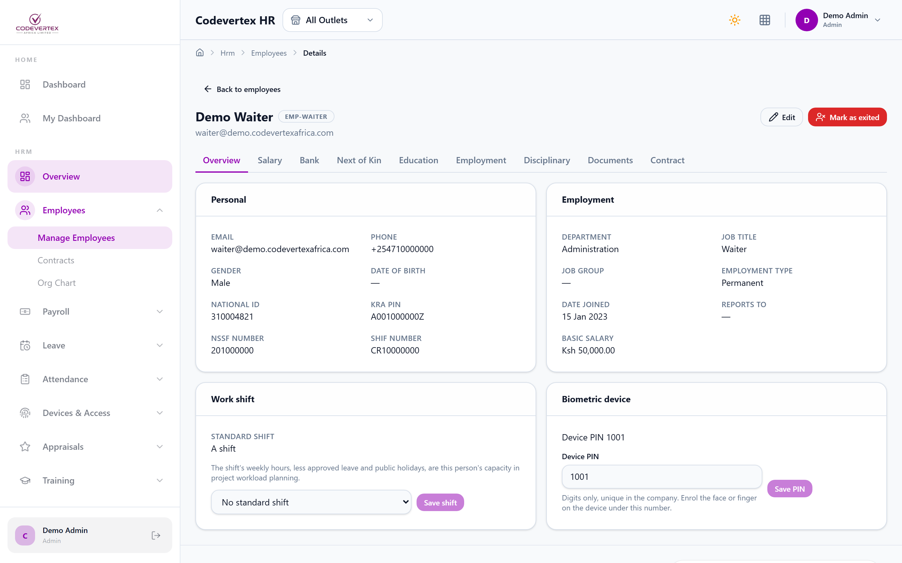
The employee profile, with tabs for salary, bank, next of kin, documents and contract
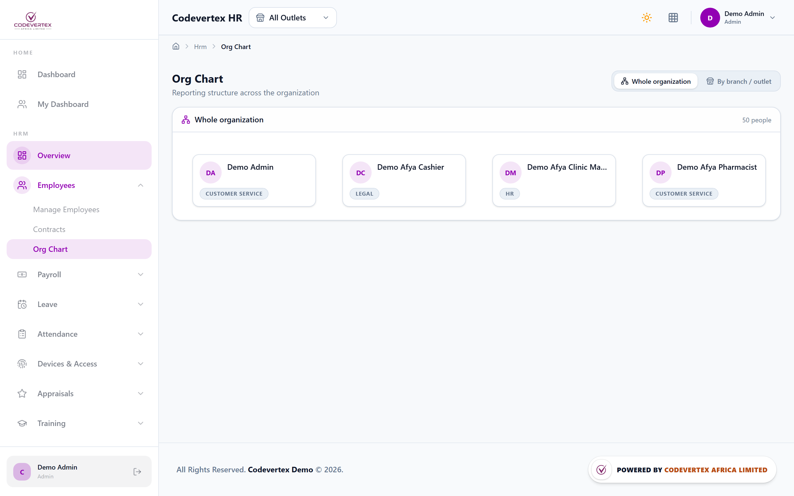
Org chart drawn from reporting lines
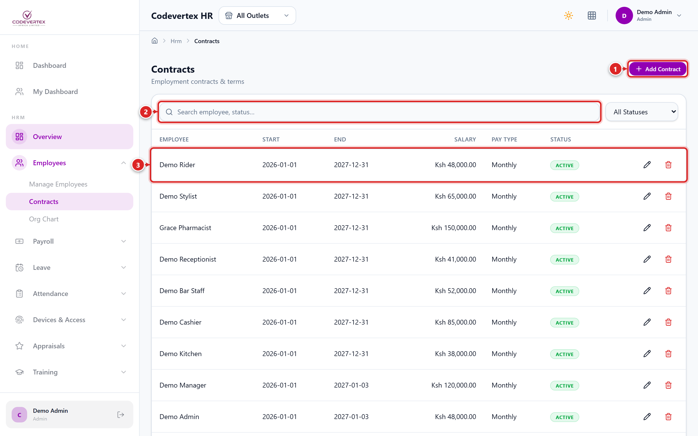
Contracts with dates, pay type and status
3. Time and attendance
Shifts and rules you set once, applied every day
Each punch, from a terminal or a phone, becomes one attendance record per person per day: first in, last out, hours worked, minutes late, minutes left early and overtime, measured against that person's shift.
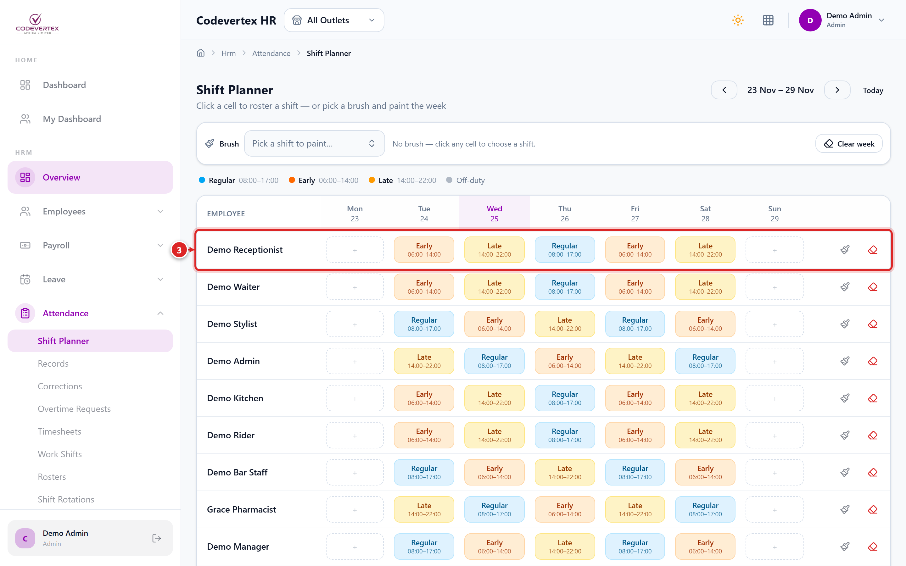
Shift planner: who works which shift each week
Area
How the ERP handles it
Shifts and rosters
Day, evening and night shifts with grace minutes, weekly rosters, rotations, off days and one-off overrides. A night shift that crosses midnight counts as one work day.
Lateness and early leave
Grace periods on the shift start and end. Rules per branch or department, for example a fixed amount per late arrival, prepared as deductions for HR to review.
Absence
Rostered staff who did not clock in are marked absent overnight, unless they were on approved leave, off or on a public holiday.
Overtime
A daily threshold and cap, multipliers for overtime and public holidays, and an option to pay only approved overtime.
Corrections
Nobody edits a punch silently. A correction goes to approval and the record keeps the original times, the new times, who asked and who approved.
Phone clock-in and geo-fencing
Work sites drawn on a map as a circle or an outline. A clock-in outside the site can be recorded, flagged for HR or blocked. Field staff can clock in anywhere, with location, an optional photo and a note.
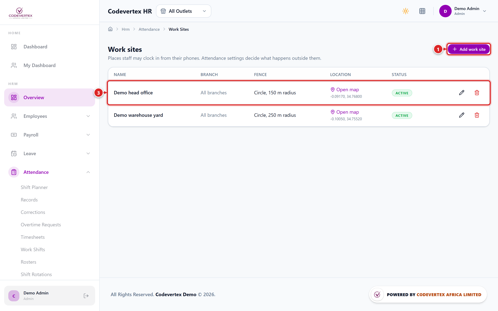
Work sites for geo-fenced clock-in
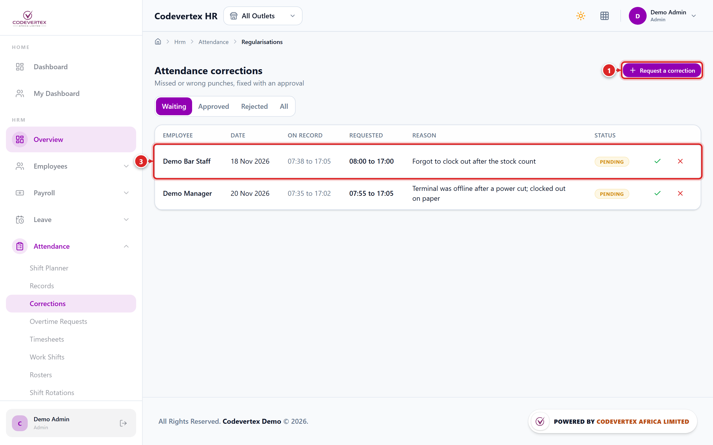
Correction requests with original times
4. Devices and access control
SenseFace 4A terminals that talk to the cloud
Codevertex ERP works with ZKTeco terminals that support the cloud push protocol, such as the SenseFace 4A (face, fingerprint, palm and card). Terminals send punches and door events straight to the ERP over the internet, so no computer has to stay on at each site. A terminal that loses internet keeps its punches and sends them when the connection returns, and punches sent twice are kept once.
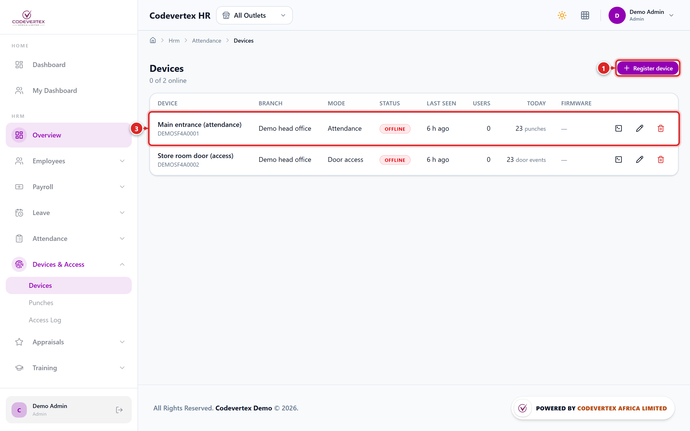
Devices: online status and remote commands
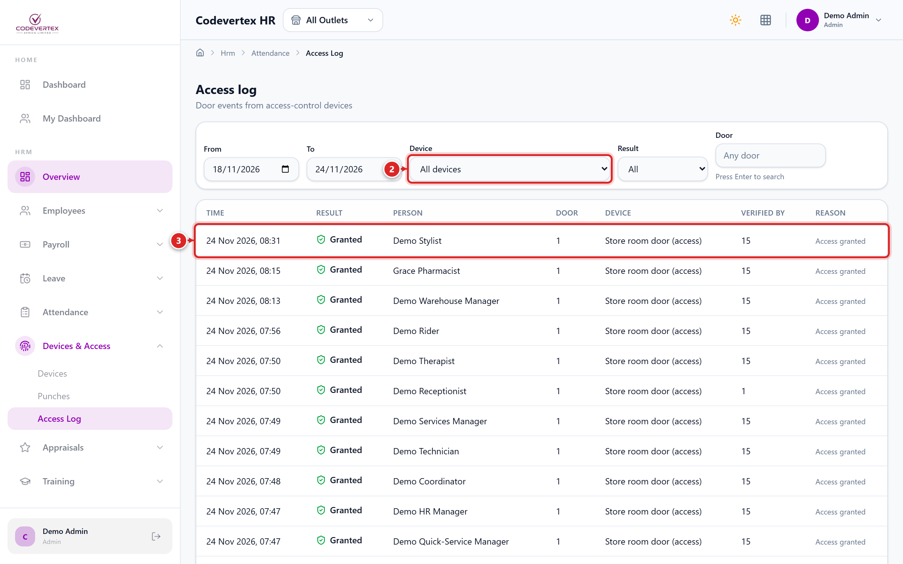
Access log: granted and refused entries
What you can do from the ERP
Register terminals by serial number, name them (Main gate, Factory floor) and assign each to a branch and work site.
Lock a terminal to your sites by listing each site's internet addresses, so punches that claim its serial from anywhere else are refused.
Send staff to terminals in one step using each employee's device number, then enrol faces or fingers on site.
Send commands: open the door, restart the terminal, reload or clear stored punches, and see the terminal's answer.
Follow door activity: granted entries, refused attempts, unknown faces or cards and entries outside working hours.
sequenceDiagram
participant T as SenseFace 4A
participant E as Codevertex ERP
T->>E: Hello, serial number (every few seconds)
E-->>T: Settings and waiting commands
T->>E: New punches (face, finger, card)
E-->>T: OK
E->>E: Match to employees, update attendance
T->>E: Door event, granted or refused
5. Leave and approvals
Leave that balances itself, approvals that follow your rules
Set up leave types (annual, sick, maternity, paternity, compassionate) with default days, paid or unpaid, and carry-forward. Give individuals their own entitlement where needed. A daily job builds every balance, including days carried forward up to the limit you set.
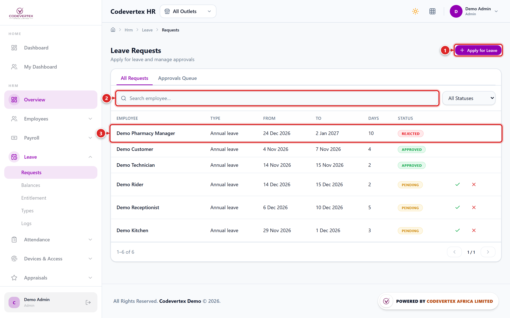
Leave requests with an approvals queue
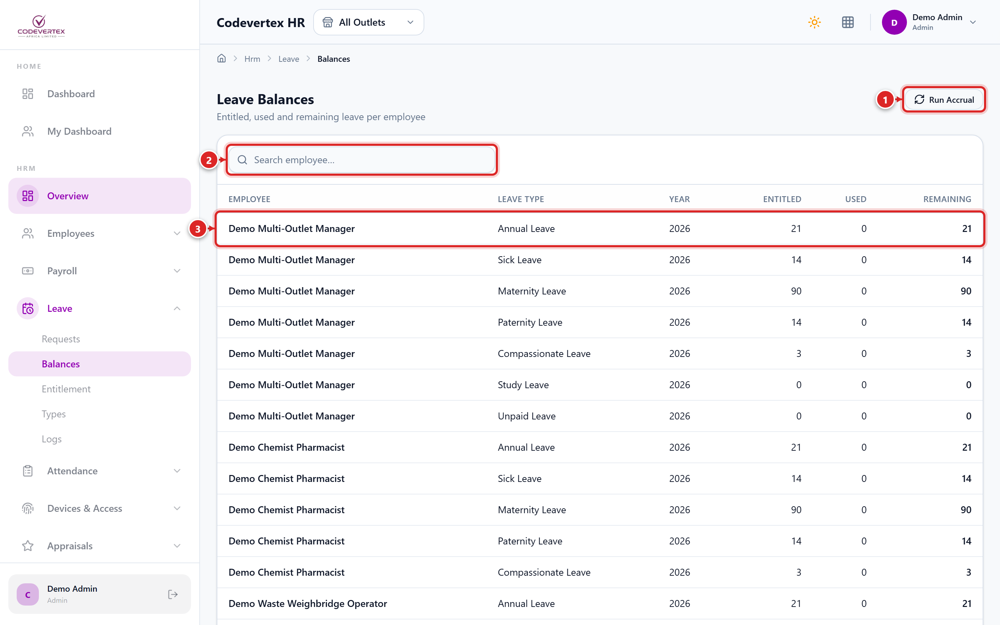
Entitled, used and remaining days
Staff apply from their phone, or HR applies for them. Approved days come off the balance, the employee is notified either way, and a day on approved leave is never marked absent or deducted in payroll. Every request, decision and cancellation is kept in the leave log.
One approval engine for the whole ERP
Describe once per module who signs off and in what order: the line manager, the department head, anyone holding a role, or a named person. Every request in that module then follows those steps.
Module
What happens on final approval
Leave request
The days come off the balance
Attendance correction, overtime
The record takes the new times, and approved hours count for payroll
Appraisal, performance review
The appraisal or review is finalised
Contract, recruitment offer
Signed off before it is issued or made
Payroll
Signed off before the month can be paid
A rejection at any step ends the request with a reason. A step can be escalated when an approver is away. Without a workflow, requests still reach someone who can decide them.
6. Payroll
Kenyan payroll with rates kept current for you
Payroll calculates PAYE, NSSF, SHIF, the Affordable Housing Levy and the NITA levy. Every company starts with the full Kenyan catalogue of earnings, deductions and benefits, and the national rates are maintained by Codevertex as platform defaults. When a rate changes, the new rate applies to everyone from its start date and earlier months keep the rates that applied to them. If a rate is missing for a period, the run stops and names it, so nobody is ever deducted zero by mistake.
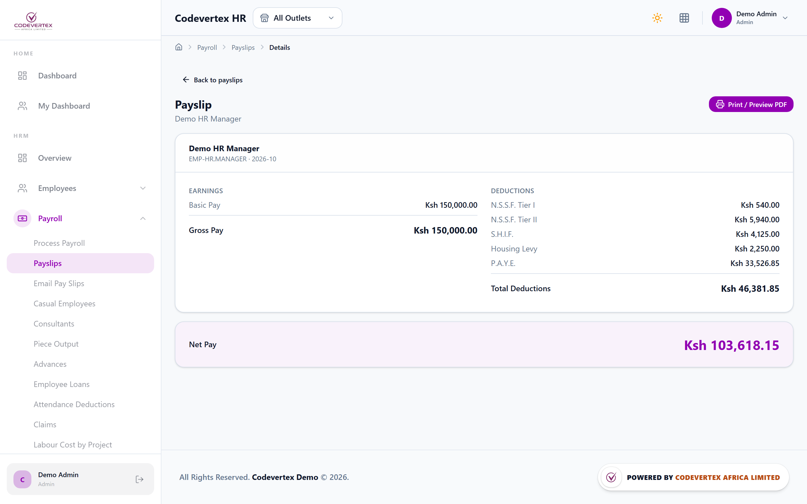
A payslip with earnings, deductions, employer contributions and net pay
Preview, run, approve
Preview gross pay, deductions and net pay per person before anything is saved. The run works in the background with a progress bar. An unapproved month can never be paid.
What attendance adds
Approved lateness and absence deductions, overtime, holiday pay and approved piece earnings come in for each person, on separate payslip lines.
Payslips
Each payslip shows earnings, deductions, employer contributions and net pay as a PDF. Email every employee their own payslip, now or at a set time.
Paid through Treasury
Disbursing posts the payroll journal to your books and pays net pay by M-Pesa, Airtel Money or bank. A double click never pays twice.
Processing, approving and disbursing are separate permissions, so the person who runs payroll does not have to be the person who pays it. A disbursed month can be reversed while none of its payouts has been made.
flowchart LR
A[Attendance, overtime and piece output] --> B[Preview]
B --> C[Run payroll]
C --> D{Approval}
D -->|approved| E[Disburse]
E --> F[Journal posted in Treasury]
E --> G[Net pay by M-Pesa or bank]
E --> H[Advances, loans and purchases recovered]
7. Payroll extras
Money that moves outside basic salary
The Payroll menu also handles claims, advances, loans, casual workers, consultants and piece work. Everything here that involves money reaches the books through Treasury, so finance sees it without anyone keying it in again.
Item
How it works
Expense claims
Reimbursement, per diem, mileage or other claims with receipts attached. Claims are checked against your Treasury budgets before approval and paid from Treasury, so a non-taxable reimbursement never adds to PAYE.
Salary advances
Recovered in one or more instalments after PAYE, never more than what is outstanding. The record closes once fully recovered.
Staff loans
Loan products with an interest rate, maximum amount and repayment period. Each month's instalment comes off the payslip until the loan is repaid.
Losses and damages
Charged to the responsible employee and recovered like an advance.
Staff purchases
Goods taken on credit or layaway at a Codevertex POS shop are recovered from pay, and the shop's balance goes down when the month is paid.
Casual workers
Paid by the day or hour outside the PAYE run, including informal workers paid in cash by a supervisor who is then paid back. The cost is charged to the project.
Consultants
Paid by payment voucher with withholding tax: 5% for residents and 20% for non-residents. Treasury posts the fee, the tax payable and the net, and pays the net by bank.
Piece rates
A rate per piece, crate, bag or metre. Supervisors record daily output, quality control records rejects, and approved pieces are paid once in that month's payroll.
Labour cost by project
Pay shared across projects by percentage or fixed amount, and charged to department cost centres when not allocated.
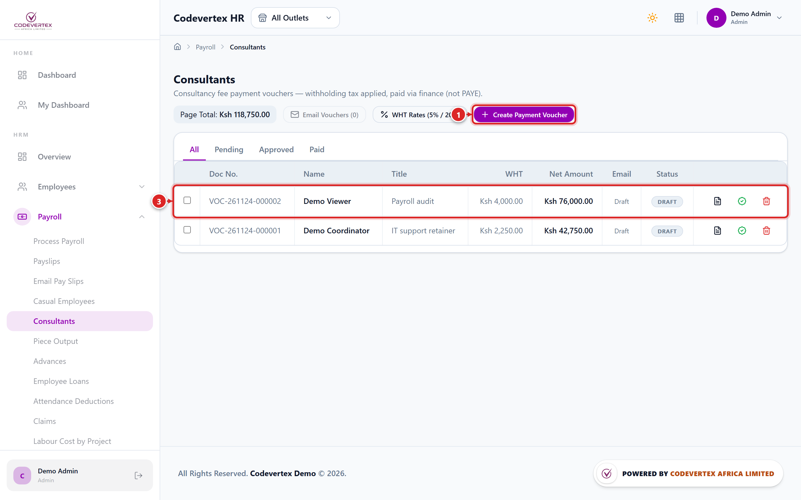
Consultant vouchers with withholding tax
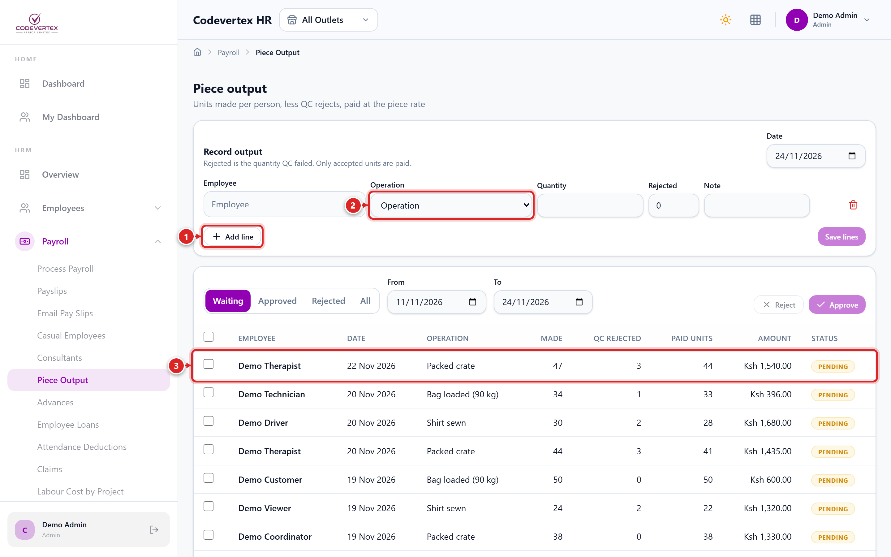
Daily piece output with rejects
8. Statutory returns
Returns built from what you actually paid
The statutory and payroll reports are built from processed payslips, so they always match what employees were paid. Each exports to PDF, to Excel (the iTax layout for the P9A and P10) and to CSV for the NSSF, SHA and NITA portals.
Return
What it shows
Filed or used
P9 and P9A tax cards
Each employee's PAYE for the year, and month by month
Each employee, KRA iTax
P10 employer return
Employer PAYE with Sheets B1, B2 and M (Housing Levy)
KRA iTax, monthly
P10A annual return
The year's PAYE and statutory totals per employee
KRA iTax, yearly
Withholding tax
Tax withheld per payee
KRA iTax, monthly
NSSF
Employee and employer contributions
NSSF employer portal
SHIF
SHIF contributions with each member number
SHA employer portal
Housing Levy
Employee 1.5% and employer matching 1.5%
KRA iTax (P10 Sheet M)
NITA
The training levy per employee
NITA portal
Bank net pay
Net pay grouped by bank
Your bank
Muster roll and variance
The full payroll, and this month against last month
Review before you pay
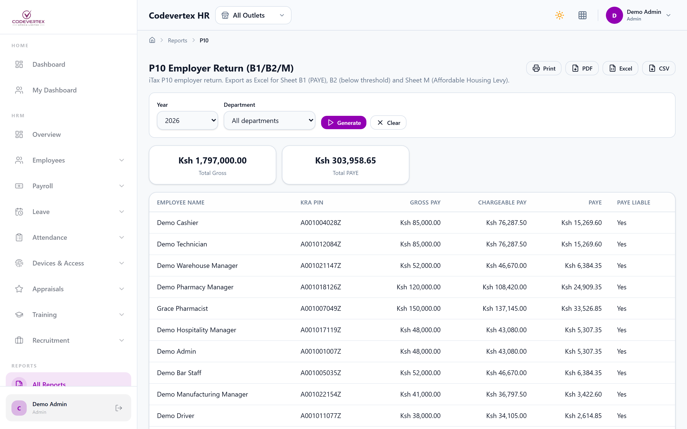
P10 employer return in the iTax layout
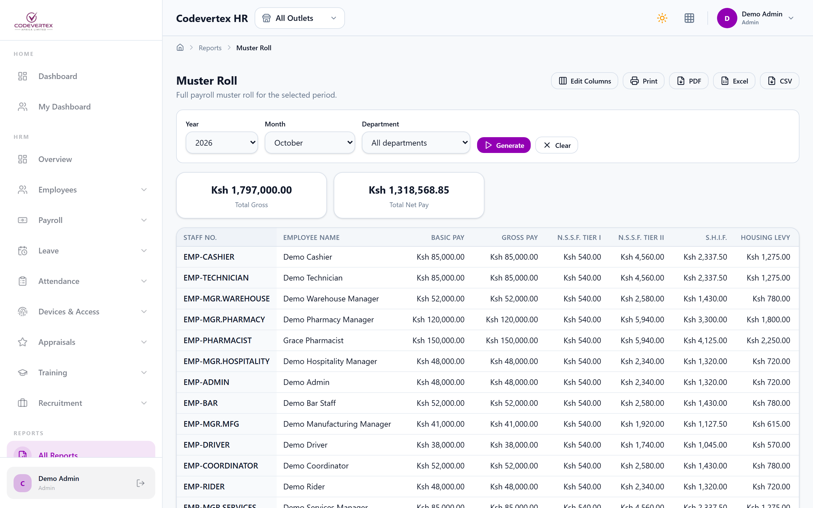
Muster roll with every pay component
9. Recruitment
From job posting to first day
Every company gets a public careers page with its logo. Publish a posting and it appears there with its own page to share on your website, social media and job boards. Applicants fill in their details and attach a CV, and receive an email confirming the application.
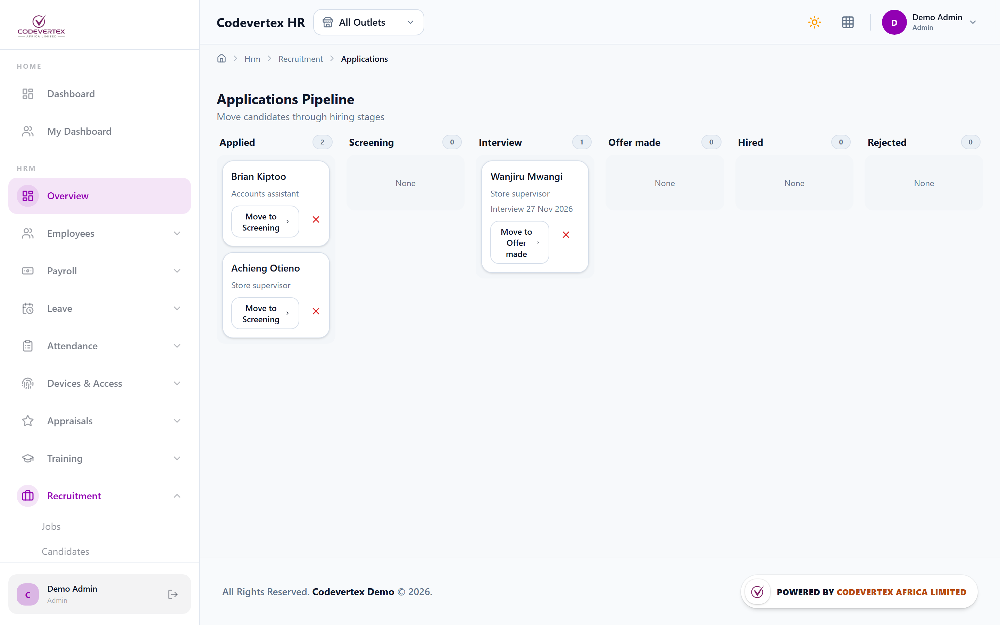
The applications pipeline, one column per stage
Job postings
Title, department, location, employment type, openings, an optional salary band, description, requirements and a closing date.
One talent pool
A candidate who applies to two jobs has one record. The same email cannot apply twice to the same posting. Add referrals by hand.
A clear pipeline
Applied, Screening, Interview, Offered, Hired or Rejected, one stage at a time. Candidates are emailed at interview, offer and rejection.
Hired becomes employee
Moving a candidate to Hired creates the employee record with a staff number and starts onboarding with a standard checklist.
Onboarding checklist
Area
Standard tasks
IT
Laptop and equipment, email and system accounts, building and door access
HR
Signed contract, KRA PIN, NSSF and SHIF details, bank details, added to payroll
Training
Company orientation, role specific training, safety and compliance induction
Each task has a person responsible and a due date, and onboarding completes itself when every task is ticked.
10. Appraisals, performance and training
Reviews, targets and courses in the same record
Appraisal cycles
Run reviews in cycles such as "2026 Mid-year" with reusable templates of weighted questions. Evaluators score each question, then an approver finalises or sends it back with a reason.
Goals
Each person's goals with a category, target date, weight and progress bar, and a library of standard goals to reuse.
Performance metrics and targets
Define measurable metrics (numeric, percentage, a 1 to 5 rating or yes and no) with a unit such as KES, calls or tickets. Set a target per person and period, record the measured values, and see who is on track before the formal review. Performance reviews carry a 1 to 5 rating and follow their own approval workflow.
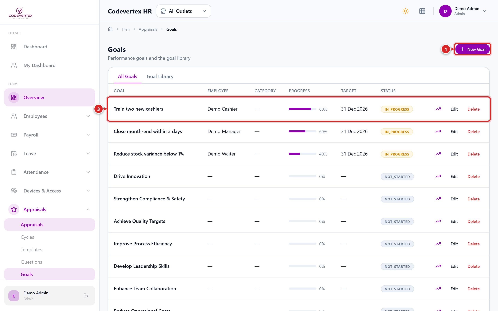
Goals with weights and progress
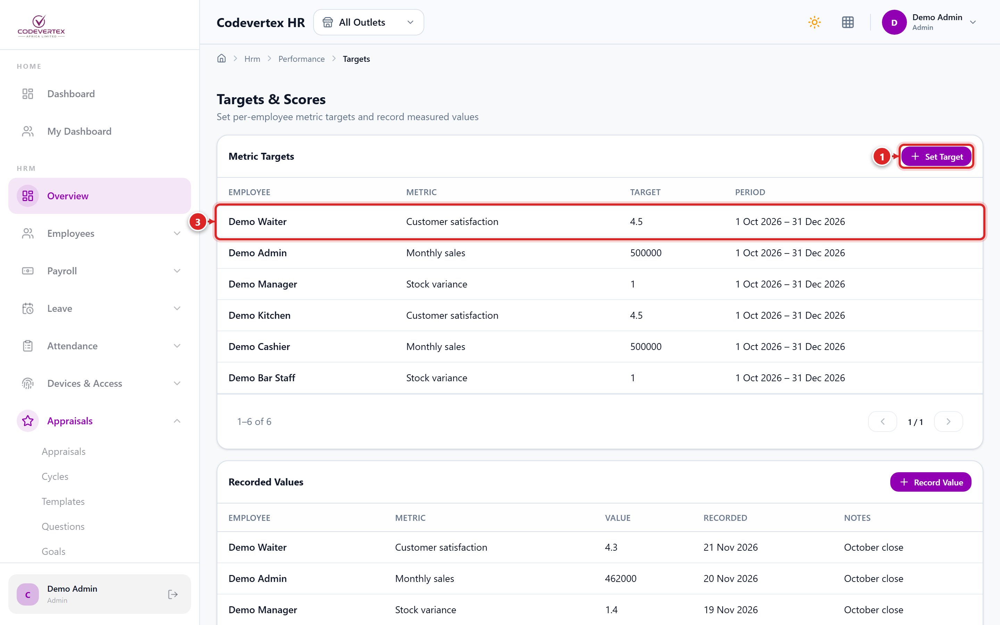
Targets and recorded scores per person
Training
List the courses you offer with dates and a description, enrol employees, mark each enrolment completed or cancelled, and record each person's rating and feedback afterwards. Evaluations show which courses to run again and which providers to keep.
11. Employee self-service
On the phone for staff, on the web for managers
Clock-in from the phone with a location check
My Dashboard is where every member of staff starts. It works in any phone browser and can be added to the home screen like an app, with no app store download.
Clock in and out with the location read only at that moment, never in the background. A photo can be required.
Apply for leave and see balances.
Download payslips and the yearly P9 for filing a KRA return.
Log timesheets and see daily attendance.
Request a correction for a missed clock-out, or ask for overtime to be approved.
Each staff member only sees the actions their role allows, and is notified when a request is decided.
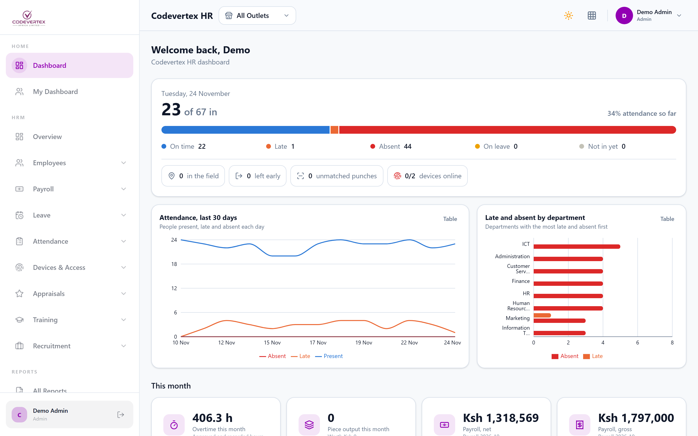
The home dashboard: who is in, late, absent, on leave or in the field, with overtime and piece earnings
12. Reports
Reports for each department
Reports are grouped by the department that uses them. Each filters by date range, department, branch and employee, and downloads as PDF, Excel or CSV.
Department
Report
What it shows
HR
Attendance register
Each person's daily in, out, hours, lateness, overtime and status
Absenteeism
Working days, days present, absent and on leave, and the absence rate
Lateness and early leave
Late days and minutes late; early departures with minutes missed
Security
Access log
Door events, refused attempts and entries outside working hours
Quality control
Piece output
Quantity, rejected and paid pieces, reject rate and amount
IT
Device health
Each terminal's status, last contact, punches, unmatched punches and failed commands
Management
Attendance summary
Per department: headcount, present, absent and late days, attendance rate, overtime and piece pay
Overtime
Overtime worked against approved hours
Payroll
Statutory and payroll
P9, P9A, P10, P10A, withholding tax, NSSF, SHIF, Housing Levy, NITA, bank net pay, muster roll and variance
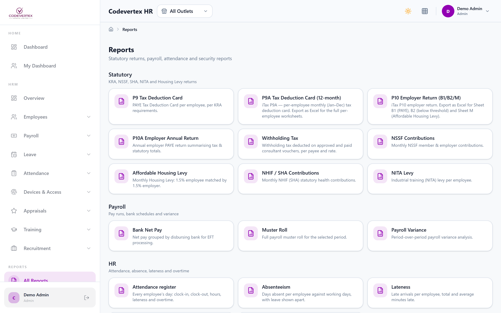
The reports page, grouped by department
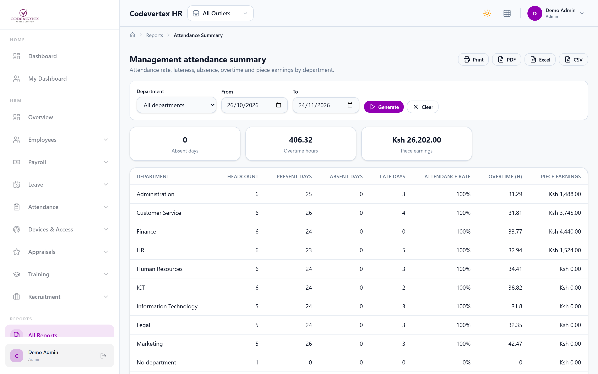
Attendance summary by department
13. Integrated services
Connected to the rest of Codevertex
The ERP shares sign-in, staff, branches and plans with the other Codevertex services, and hands money, messages and project time to the service that owns each of them. Nothing is exported and re-imported between them.
flowchart LR
AUTH[Accounts and sign-in] -->|staff, branches, roles| ERP[Codevertex ERP]
SUB[Subscriptions] -->|plan and features| ERP
ERP -->|journals, payouts, claims, vouchers| TRE[Treasury]
TRE -->|payout results| ERP
ERP -->|payslips, approvals, reminders| NOT[Notifications]
ERP <-->|timesheets, capacity, labour cost| PRJ[Projects]
POS[POS] -->|staff purchases| ERP
LOG[Logistics] -->|rider per diem| ERP
Service
What it does with the ERP
Accounts and sign-in
One sign-in for every Codevertex app, with two-step verification. Your organisation, branches, team members, roles and branding reach the ERP automatically, so nothing is entered twice.
Subscriptions
Your plan decides which ERP features are open. Upgrades take effect without reinstalling anything.
Treasury
Each processed payroll posts its journal to your books. Net pay is paid by M-Pesa or bank and the result returns to the payroll run. Expense claims, casual worker payments and consultant vouchers are paid the same way.
Notifications
Payslip emails, approval requests and decisions, leave reminders and staff notices by email, SMS or WhatsApp, using your templates.
Projects
Timesheet hours billed to projects once, labour cost and unbilled hours per project, and each person's free capacity counting shifts, leave and public holidays.
POS
Staff purchases made at the till are recovered from pay in instalments.
Logistics
Riders who are staff earn per diem through ERP claims, under the same approvals and payroll rules.
Each service owns its own records and the others read them. Staff, attendance, leave and payroll belong to the ERP; sign-in and branches to Accounts; journals and payments to Treasury; messages to Notifications. That keeps one version of the truth.
14. Hosting and security
Cloud hosted, reachable from every site
Monthly plans include hosting on the Codevertex cloud, the same platform that runs Codevertex Treasury, POS and Inventory. Terminals and phones reach it over any internet connection, so a new site only needs power and internet.
flowchart LR
subgraph Sites
T1[SenseFace 4A, head office]
T2[SenseFace 4A, branch]
PH[Staff phones in the field]
end
subgraph Cloud[Codevertex cloud]
API[Codevertex ERP]
PAY[Treasury]
MSG[Notifications]
end
T1 -->|push over internet| API
T2 -->|push over internet| API
PH -->|HTTPS| API
MG[Managers on the web] -->|HTTPS| API
API --> PAY
API --> MSG
Sign-in and permissions
One sign-in with two-step verification, roles and permissions per user, and separate permissions to process, approve and pay payroll.
A record of every change
Approvals keep who decided and when. Corrections keep the original times. Leave logs record every request and decision.
Terminals you can trust
Only registered terminals are accepted, each can be locked to your sites' internet addresses, and a terminal that stops reporting shows as offline.
Your data
Encrypted connections, platform database backups kept in separate storage, and every report downloadable as PDF, Excel or CSV.
15. Support and escalation
Support with response times written down
Level
Price per month
What it covers
Standard
Included
Monday to Friday, 8:00 to 17:00, by WhatsApp, email and phone. First response: critical 4 hours, high 1 business day, normal 3 business days.
Priority
KES 15,000
Monday to Saturday, 7:00 to 21:00. Critical issues answered within 1 hour with a workaround target of 8 hours, a named engineer, alerts when a terminal goes offline, and a monthly health check.
Premium
KES 35,000
Critical issues 24 hours a day, 7 days a week with a 30 minute response, a quarterly on-site review in Nairobi, and 4 customisation hours each month.
Severity and escalation
Severity
Examples
Critical
No one can clock in at a site, payroll cannot run on pay day, or the system is unavailable
High
One terminal offline, a report or approval not working, wrong figures for some staff
Normal
Questions, how-to requests and small layout issues
flowchart LR
L1[Level 1: Support desk] -->|not resolved in the target time| L2[Level 2: Engineer]
L2 -->|needs a product change or data repair| L3[Level 3: Product lead]
L3 -->|commercial or repeated issue| L4[Level 4: Director]
Each level has a time limit for the severity. When it passes, the issue moves up and you are told who owns it.
The ERP is available monthly or as a one-time licence. Prices are in KES and exclude VAT and terminal hardware.
Plan
Monthly
One-time licence
Annual support (licence)
Staff
Starter
KES 10,000
KES 250,000
KES 50,000
Up to 10
Growth
KES 20,000
KES 600,000
KES 120,000
Up to 30
Professional
KES 35,000
KES 1,200,000
KES 240,000
Unlimited
Enterprise
Quoted
KES 2,000,000
KES 400,000
Unlimited, dedicated setup
Monthly plans include hosting and Standard support, with a one-time setup fee of KES 10,000. One-time licences have their own setup fee and an annual support plan. Priority and Premium support can be added to any plan. Current prices are also shown on www.codevertexafrica.com, which reads them live from our billing system; if the two differ, the website is correct.
Growing with Codevertex
More sites and staff
Add branches, terminals and staff as you grow. Your plan's features open as you upgrade, without reinstalling anything.
Treasury
Accounts and payments on the same sign-in, receiving payroll journals and paying staff.
Inventory and POS
Stock and point of sale on the same sign-in and staff records, with staff purchases recovered from pay.
17. Customisation and next steps
Most changes are settings you control
Shifts, rosters, grace periods, overtime rules and multipliers, geo-fence behaviour, leave types, approval steps, piece rates, report filters, document numbering and branding are settings your administrators change themselves at no cost.
Change
Charge
Settings and configuration
Free, or done by us on request under your support level
A new report layout or export format
Fixed quote per report
A new workflow, integration or feature
Fixed quote per agreed scope, or KES 4,000 per hour
Premium support customers
4 hours each month included
Every change is agreed in writing with what will be delivered, the price and the date before work starts.
From demo to live: a typical plan
Your own dates depend on staff numbers, how ready your data is and when terminals arrive. We agree them with you in writing before work starts.
Week
What happens
1
Live demo, then agree the plan, departments, shifts, leave types and approval steps
1 to 2
Import staff from CSV, set up company settings, payroll components and work sites
2
Connect terminals, link staff device numbers and enrol faces and fingers
3
Run attendance and a payroll month alongside your current process and compare
4
Go live and train HR, payroll, supervisors and staff
To start, send us your staff list with departments and shifts, the number of sites and terminals, and a recent payroll month to compare against. Book a live demo at www.codevertexafrica.com.